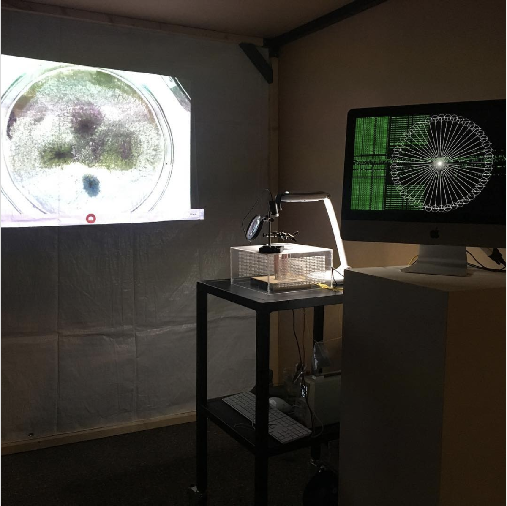

HELLO!
I am a coder and artist currently working at the Critical Media Lab. I am developing for the project Thinking Toys for Commoning, Self Organizing Maps for the Architectonic Radio Explorations and also working on my Phd dissertation that looks at the ways in which capitalists mode of production and machine learning are re-enacting forms of inequity and discrimination. I also has pioneered a programme at the Critical Media Lab that links technological education and cooking practices.
2019 Workshop 9 Hysterical Media Truths You’ll Never Believe! @Transmediale, resulting in a
micro-publication availale here
2019 Talk Phantasms of Decentralization? Conversations About Commoning With Coming Media @Transmediale
2018 New Face Award
@Japan Media Art
Festival + Exhibition + talk
2017 Collective exhibition
@The Wrong Digital Art Biennale
2017 Collective exhibition
@H3k
for the 2017
Regionale
2017 Talk "The Dither is Naked"
@TEOK
2015 – 2017 MA in Visual Communication and Iconic Theory @HGK, Basel
2014 The new portrait Zine by Mathea Millman
2014 Naturae by Steve Bisson
2014
Dazed
Digital
2013 Der Greif Photomagazine issue #7
2013 finalist of 17th edition of the "vfg Nachwuchsförderpreis für Fotografie"
2012 Collective exposition, Piombino Social Photo Fest, Piombino.
2012 Collective exposition, Diladdarte, Firenze.
2011 La Luna Di Traverso, online magazine.
2007 – 2011 BA in Photography at Università degli Studi di Firenze
For inquiries drop a line @
yannpatrickmartins [at] gmail [dot] com
My web presence manifests on
Github.
ABM
Since january 2018 I am part of a research group at the
Critical Media Lab, focusing on
"Thinking (Toys or Games)
for Commoning": a project looking at the complexity of commoning as a subject and making
it understandable through playing and gaming.
As creative coder of the team I am developing
agent based models that
I am currently programming the games and models with JavaScript and
p5.js.
I also curate the design of our
website.
And
here a link to our project repository with the
developed models.
UNTITLED
During the OSLO Night 2019 I had the pleasure to work with Tena Kelemen and Mihcaela Büsse to develop a machine that would intercept internet packets and translate them into magnetic fields. To realize this project I used processing and the carnivore library to intercept internet traffic, then such information needed to be passed to an arduino board to activate the four elctro magnets we built with copper coil. The latter would than animate iron dust we positioned on a petri dish in various configurations according to the content of the packet. My task was to build and develop the software to capture the packets as well as the electronics to operate the electro magnets.
TEACHING!
I teach [critical] creative coding classes at the Academy of Art and Design in Basel (Hochschule für Gestaltung und Kunst, FHNW) together with Shintaro Miyazaki.
Additional to that I also give some workshops
GENEALOGY OF THE DITHER IS NAKED!
If you don't want to read the whole text just click the following links to see the different stages of the project.
My first experience with dither was during my my first year of my Masters. During the first year I needed to print a gradient, but our printer was not good enough. The prints were full of artifacts due to the large amount of colors in a gradient. I decided therefore to use the Photoshop built-in tool for colour palette reduction. The tool provided various options to choose between different dither algorithms. This was the result I had while playing with the tool.

EYE BLEEDING!
But it was olnly one year later that I mastered the
Floyd–Steinberg
dithering algorithm. This was possible also thanks to
Daniele Piccone,
Daniel Temkin and their amazing work.
Last and but not least this text about
"digital halftoning, or
dithering" was quite helpful to understand the mechanics of
dithering.
Floyd–Steinberg
dithering works by using an error diffusion algortihm
It spreads the error according to some hard-coded values as follows:
| [ ] | [ ] | [ ] |
|---|---|---|
| [ ] | [*] | [7/16] |
| [3/16] | [5/16] | [1/16] |
The pixel with the * indicates the pixel being currently scanned by the
algorithm.
Those values became my playground for the exploration of the
dithering algorithm. My first step was to change the common
divisor (16) of the those hard-coded values.
| [ ] | [ ] | [ ] |
|---|---|---|
| [ ] | [*] | [7/ 16] |
| [3/ 16] | [5/ 16] | [1/ 16] |
This lead to the creation of a Tumblr-Bot, posting dithered gradients with random values as dividend in the error quantization algorithm.

The next step was to create a Twitter-Bot, reacting to the #prettyDither hashtag, followed by two colors, i.e. #prettyDither red green
In order to gain a better control over the algorithm I decided to control also the the divisor of the error quantization algortihm
| divisor
––––––– dividend |
divisor
––––––– dividend |
divisor
––––––– dividend |
|---|---|---|
| divisor
––––––– dividend |
divisor
––––––– dividend |
divisor
––––––– dividend |
| divisor
––––––– dividend |
divisor
––––––– dividend |
divisor
––––––– dividend |
I implemented this to control the the calculation of the quantization error among all the neighboring pixels, not only the 4 in use in the Floyd–Steinberg algorithm. this lead to the development of this website, that allows user to control each part of the algorithm.


The interesting thing about the dithering algorithm, is its camouflaging attitude. What do I mean? Good dithering algorithms, when properly developed, should remain unnoticed by the viewers eyes. Curiously enough when the same algorithm is applied to gradients its camouflaging qualities get weaker revealing the algorithm structure in the form of colorful patterns. The additional control on the quantization error algortihm allows for more in depth analysis of the dithering process.
FISIOGNOMIC HOROSCOPE
The Fisiognomic Horoscope was created for the Yami-Ichi Flea Market @H3K. Thanks to Wekinator, a machine learning software, it was possible to train a model with celebrities faces, and their astrological sign. People can sit in front of the camera and let their face be scanned. The trained model matches their face traits with the ones in the database. At the end the matching horoscope is printed. The project was done to bring awareness about the use of machine learning in the facial recognition field. Some Ph.D students already applied machine learning to determine if someone could be a criminal or not. This was possible by training a model with the portraits of already convicted criminals.
I am currently trying to port this project to JavaScript with tensorFlow.js.
FUNNY GAMES!
Despite the encouraging title, maybe those games are not funny at all.
Those games are developed to be played on handheld devices – yes, like your phone – they use the
gyroscope of your device to steer and control the elements in it.
There is no score or goal in the games.
(Maybe they aren't games at all...)
Growing up as omega–male* is harsh!
* I hope that the self irony is clear!
Oh software, you **are** kind of magic!